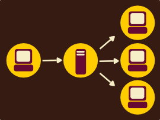
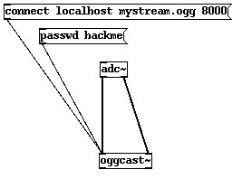
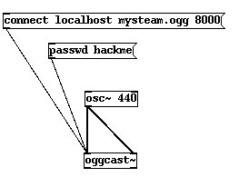

oggcast~

Oggcast is known as a Pure Data External, it is not part of the Pure Data 'native' packages. Oggcast was written by Olaf Matthes.
Oggcast is a streaming object. It enables you to send audio encoded in ogg vorbis to an Icecast2 or JROAR streaming server. This means you can send live audio through the internet or a local network from Pure Data, and one or more computers can pick it up from the streaming server, like so:

This means you also need to have access to a streaming server. If you have not set one up before this might be tricky. You could also try borrowing some server time from someone. You will need to get the following details from the streaming server administrator to be able to stream to the server:
- Server address (hostname) of the server
- Port to stream on (usually 8000)
- Password
- Mount-name (the name of the stream you will create on the server)
Parameters
All Parameters are listed here:

The passwd parameter is passed to the oggcast~ object through a message box.
Streaming from your Sound Card
Streaming from your sound card is really easy with oggcast~, you just need to try this patch:

In the above example you would replace :
- localhost with the IP Number or hostname of your streaming server
- mystream.ogg with the mount point (name) of your stream
- 8000 with the servers port number (it is usually 8000)
- hackme with your servers password
In the above patch you will need to first press the password message box while Pd is in run mode, and then press the connect message box.
Streaming from Pure Data audio
Alternatively you can create a patch for synthesising sound and then stream this. Here is a simple example using a osc~ object.

Again, in the above example you would replace :
- localhost with the IP Number or hostname of your streaming server
- mystream.ogg with the mount point (name) of your stream
- 8000 with the servers port number (it is usually 8000)
- hackme with your servers password
Tips
- changing the parameters of oggcast~ while streaming can cause the stream to drop out